The feel
Y2K is the future as it was imagined around the year 2000: "buoyant and iridescent, virtual and galactic", in the words of the Museum of Arts and Design, a look that made the future tangible.1 i-D's A to Z of the era, compiled with Evan Collins, starts from "tight leather pants, silver eyeshadow, shiny clothing, Oakleys, gradients, blobby electronics", and credits the iMac with making plastic colourful, blobby and transparent.2
It runs on faith in technology, which i-D traces to techno-utopian ideals, the dot-com boom and the calm after the Cold War.2 Ian Anderson of The Designers Republic says games like Wipeout let designers "impatient, by nature, for the future" build pre-packed worlds, so "we didn't have to wait for the future, we brought it to us".3 Games kept the look alive: Collins says much of today's revival draws on the extreme looks of games like Jet Set Radio.4
- liquid
- lickable
- over-engineered
- bright-eyed
- see-through
- dial-up fast
Where it comes from
Y2K is shorthand for the year 2000, best known from the Y2K bug, the coding problem that was expected to cause havoc in computers at the start of that year.5 On the design side, The Designers Republic, founded in Sheffield in 1986,3 packaged Psygnosis's Wipeout (1995) like a dance record, from the manual and box art to the interface, icons and team logos,6 and had a hand in Wipeout 2097 and Wipeout 3.7 Apple's iMac G3 (1998) put a computer in translucent coloured polycarbonate instead of a grey box,8 and in January 2000 Apple unveiled Aqua, with "luminous and semi-transparent elements such as buttons, scroll bars and windows".9 On the Dreamcast, Smilebit's Jet Set Radio (2000) went cel-shaded,10,11 part of a wider turn to non-photorealistic graphics.12
The look was catalogued online much later: Evan Collins and Froyo Tam gather it from old books, magazines, CDs and product exhibitions into a taxonomy for designers, and Collins dates his interest to 2014.4 In 2016 i-D asked Collins, whose Institute for Y2K Aesthetics archives the era, for an A to Z of it.2 Tam puts the end of the original mood down to 9/11 and "the death of optimism".4 Bomb Rush Cyberfunk took up the Jet Set Radio side as a spiritual successor, with Hideki Naganuma back on music.10
Core elements
Blobjects
i-D's list of the era's blobby things runs from blobjects and blob architecture to blobs on album covers, and holds up Karim Rashid's "candy-colored, translucent, soft, bubbly, gradated and sleek" products as the model.2 Bruce Sterling describes blobjects as curvy consumer goods designed on workstations and "blasted into being in a burst of injection-molded goo".13
Translucent coloured plastic
The iMac G3 swapped the grey box for translucent coloured polycarbonate, and the V&A credits it with changing the shapes and colours of all kinds of domestic electrical products.8 Translucency spread through architecture, fashion, graphic and industrial design, alongside gradients, blur, overlays and warping.2
Chrome and gloss
i-D's list opens with silver eyeshadow and shiny clothing,2 the Museum of Arts and Design's show of Y2K retrofuturism in jewellery gathered work that is "vibrant and glossy, amorphous or chromed",1 and Wipeout set flowing graphics against metallic colours.6
Hyper-detail on a grid
The Designers Republic built what Eye called a "signature baroque": repeated horizontal lines and arrows that seem to move at speed, cryptic slogans, manga, computer icons, science fiction and remodelled trademarks. It looks chaotic but "adheres rigorously to a grid".14
Space-age revival
Space Channel 5's Ulala stands for the 1960s and 70s design inside Y2K: space themes, metallic clothing, organic and Googie-inspired forms and blobby environments.2
Street culture and graffiti
Jet Set Radio shows the same future from the street: "A setting in Tokyo, inline skating tricks, graffiti art, pirate radio stations, dance motion, and Japanese katakana", as its director Masayoshi Kikuchi lists it.12 Its crew is dressed in a distinct Y2K style, and art director Ryuta Ueda used far more colour than the murky games of the day.11
How to do it
Set up a chrome material
In a physically based material, set metallic to 1 for "a fully specular reflection tinted with the base color", and take roughness towards 0 for a perfectly sharp reflection.15 Metal only reflects, so build or load surroundings worth mirroring.15 In a game, place reflection probes wherever the reflection should change, such as near buildings and where the ground colour changes.16
Blend shapes into blobs
Model blobs with metaballs, which blend "as water droplets do" when they come close, then convert them to a mesh for sculpting.17 In a shader, join signed distance fields with Inigo Quilez's smooth minimum, where k is the thickness of the blend in distance units.18
Make translucent plastic
For see-through coloured plastic, raise transmission towards 1, which is fully transmissive, and use an index of refraction of 1.5, a good approximation for glass.15 The base colour tints the transmission, roughness frosts it, and a clear coat adds a lacquered gloss.15 Give the interface the same finish: Aqua made buttons, scroll bars and windows luminous and semi-transparent, and moved them with fluid animation.9
Brand every team and company
Treat every team and company in the world as a brand, as The Designers Republic did for Wipeout: minimalist logos that could belong to a future racing corporation, and one aesthetic running through the manual, box art, interface and icons.6 Set it all on a strict grid, add speed with repeated horizontal lines and arrows, and fill gaps with barcodes, random numbers and snatches of words.14
Set the type
Use the rounded-square sans that Microgramma pioneered in 1952 and Novarese's Eurostile made famous, a genre tied to "a 1960s feeling of the future"; Michroma reworks it for screens.19 The first Wipeout cover set "Eurostile-esque type" beside crisp icons and a wireframe-style illustration.7
Cel-shade the street scenes
For the Jet Set Radio look, use toon diffuse shading, which gives a hard cut in the lighting.20 For outlines, add a second material pass that is black and unshaded, with reversed culling so only back faces draw, and grow it out along the normals.20
Use rave and big beat music
Wipeout set tracks by Orbital, Leftfield and The Chemical Brothers beside its in-house musician, CoLD SToRAGE.6 Kikuchi names the big beat trend as formative for Jet Set Radio,12 whose composer Hideki Naganuma spliced in clips from British sitcoms and MCs.11
Cheat sheet
- Era
- End of the 1990s, start of the 2000s2
- Chrome
- Metallic 1, roughness near 015
- Plastic
- Transmission near 1, IOR 1.5, tinted base colour15
- Type
- Rounded-square sans: Microgramma, Eurostile, Michroma19
- Layout
- Strict grid, repeated lines and arrows14
- Outlines
- Second pass: black, unshaded, front faces culled, grown along normals20
Do
- Build cities that go beyond a real one. Collins says Wipeout and Jet Set Radio were designed "to really go beyond a general city".4
- Let the art and the music come from the same place. Anderson says the games and music The Designers Republic worked with grew from the same sources as its design: sci-fi, consumer technology and modern Japan.3
- Make characters read as icons. Ueda wanted Jet Set Radio's cast to be "more like a symbol" than a human.11
- Use plenty of colour. Ueda pushed against the murky, dark look of games at the time.11
Avoid
- Bedazzled electronics, pink Hummers and Juicy Couture. CARI files those under McBling, a maximalist turn away from Y2K's minimalist futurism.21
- Aurora photos, bokeh and macro shots of grass behind glossy glass. That is Frutiger Aero, a corporate tech look from about 2005 to 2013.22
- A realistic, minimal city. Collins sets Mirror's Edge's "realistic-minimalist cityscape" against the wild cities of Wipeout and Jet Set Radio.4
- Chasing photorealism. Jet Set Radio came out of a turn to non-photorealistic graphics, in games that "didn't rely on realism".12
Tools and tutorials
- Chrome effect in Blender
A beginner's walk through the chrome material and lighting.
- Blender Manual: Principled BSDF
What metallic, roughness, transmission, IOR and coat do, setting by setting.15
- Blender Manual: Metaballs
Meta objects that merge as water droplets do, and convert to a mesh for sculpting.17
- Godot: Standard Material 3D
Toon diffuse shading, and the second-pass trick for cheap outlines.20
- Smooth minimum
Inigo Quilez on the function that makes shapes melt together.
- Metaballs and WebGL
Jamie Wong's step-by-step explanation of the field and the threshold.
- CARI: Y2K Aesthetic
The Consumer Aesthetics Research Institute's reference collection.
Palette
Sampled from the iMac G3 photos, Space Channel 5, Jet Set Radio and the Wipeout 2097 cover. The case colour buttons near the top of the page recolour this page's plastic, not the palette.
Feel the vibe
Listen
From Jet Set Radio, whose tracks Naganuma built from spliced samples, down to clips of British sitcoms.11
YouTubeFrom Wipeout 2097, heard here in its 2023 remaster. CoLD SToRAGE was the in-house musician on the first game, next to Orbital, Leftfield and The Chemical Brothers.6
YouTubeFrom Sonic Adventure 2. Bright, loud console rock, for the daylight side of the style.
YouTubeAlso from Jet Set Radio. Brighter and sillier, with a hook you hear in the street.
YouTubeFrom Bomb Rush Cyberfunk, which brought back Jet Set Radio's composer.10
YouTubeFrom Discovery (2001), whose liquid chrome logo is on this page.
YouTube
More references
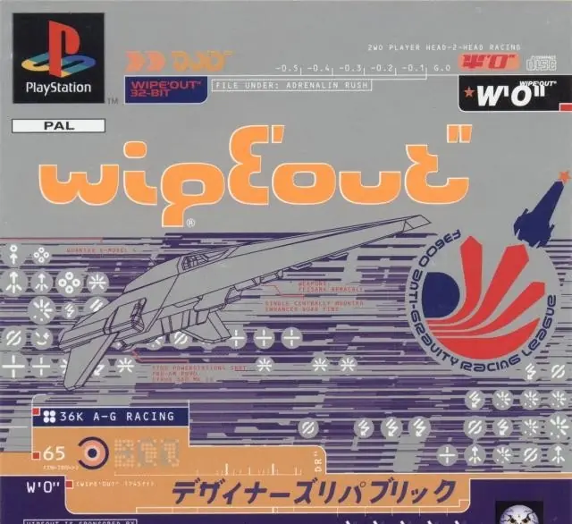
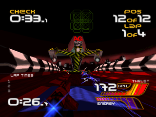
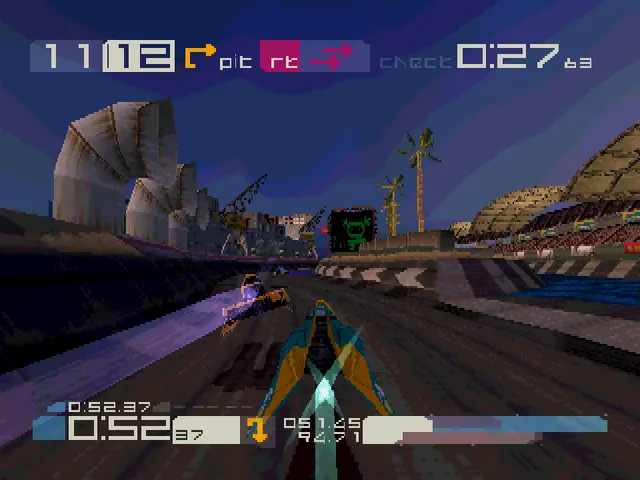
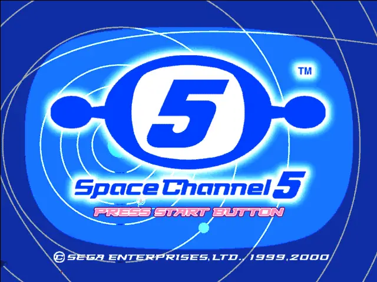
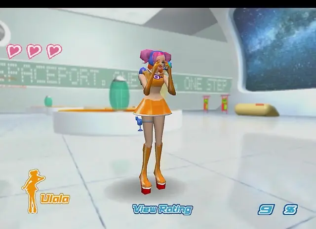
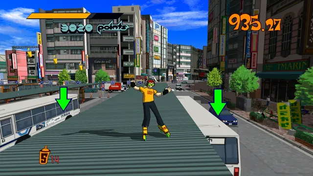
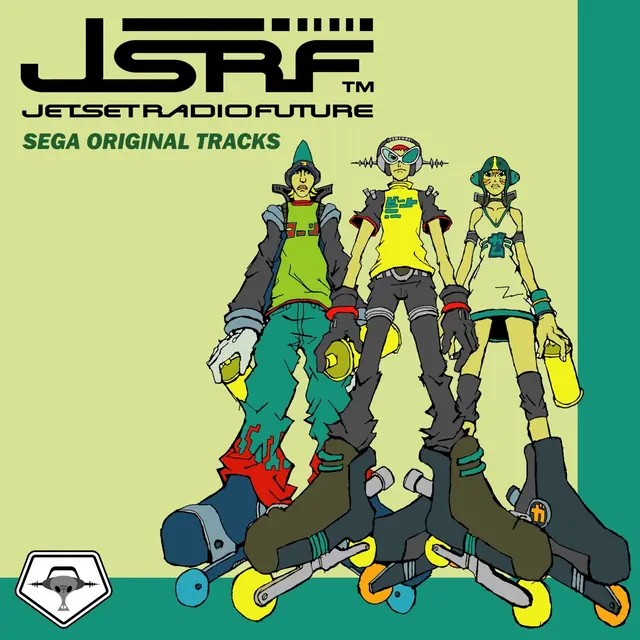
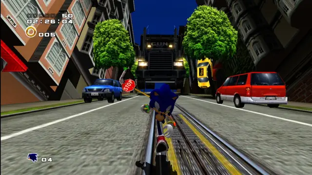
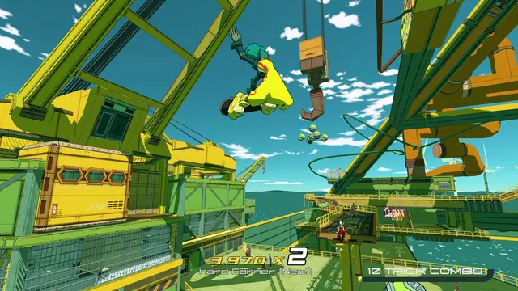
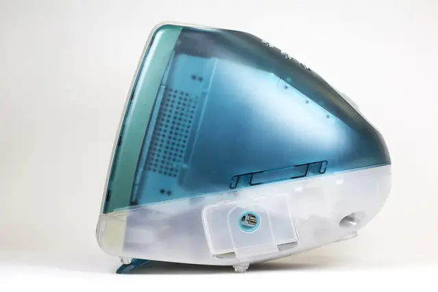
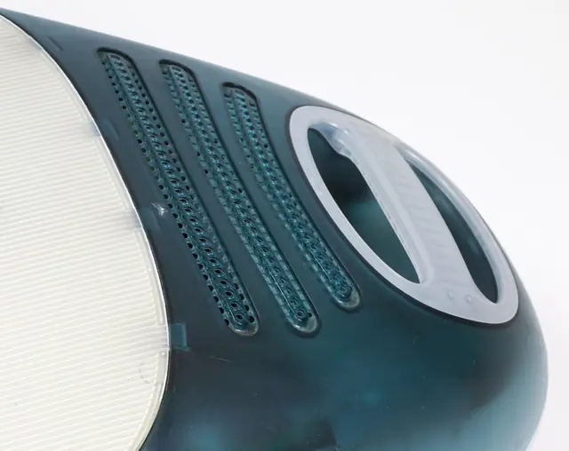
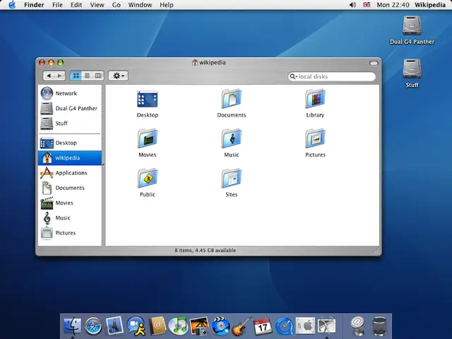
Games
- Jet Set Radio
Eurogamer's "most obvious example" of Y2K in games.4 Copy its flat colour, outlines and graffiti.
- Wipeout 2097
Made with input from The Designers Republic, like the first game.7 Study the menus, ships and team logos.
- Space Channel 5
Ulala stands for the 1960s and 70s design inside Y2K: space themes, metallic clothing, blobby rooms.2
- Sonic Adventure 2
Study its bright daylight cities and chunky interface.
- Wipeout 3
The third Wipeout made with The Designers Republic's input.7 Study its thin type and clean menus.
- Bomb Rush Cyberfunk
A spiritual successor to Jet Set Radio, with Naganuma back on music.10 Study how it updates the street side.
Film, art and more
- iMac G3
Ive's translucent coloured polycarbonate case changed the shapes and colours of domestic electrical products.8
- The Designers Republic
The Sheffield studio that packaged Wipeout like a dance record.6
- Aqua
Apple's interface of luminous, semi-transparent buttons, scroll bars and windows.9
- Discovery
Daft Punk's liquid chrome logo. Study how the reflections alone draw the letters.
- Blobject
Bruce Sterling's definition: a curvy consumer product designed on a workstation and injection-moulded.13
Sources
- 1Non-Stick Nostalgia: Y2K Retrofuturism in Contemporary Jewelry
- 2The A-Z of Y2K
- 3The Designers Republic: "Provoke response, create dialogue"
- 4Lost designs: how Y2K aesthetics shaped so much of our world
- 5Y2K bug
- 630 years of Wipeout: the futuristic racing game that caught rave music’s slipstream
- 7An oral history of Wipeout
- 8iMac G3 personal computer (O158296)
- 9Apple Unveils Mac OS X
- 10Bomb Rush Cyberfunk is an indie ode to Jet Set Radio, with the original composer
- 11Jet Set Radio is an anti-cop, Y2K fashion dream
- 1220 Years Later, The Rowdy Creators of Tokyo-to Reflect on Making Jet Set Radio
- 13When Blobjects Rule the Earth (SIGGRAPH 2004 keynote)
- 14Go-faster graphics
- 15Principled BSDF
- 16Reflection probes
- 17Metaball objects: Introduction
- 18Smooth minimum
- 19Michroma: about
- 20Standard Material 3D and ORM Material 3D
- 21McBling
- 22Frutiger Aero